자연과 함께하는 산림레포츠
태조산 산림레포츠단지는 숲속 자연환경을 활용하여 다양한 체험과 휴식을 함께 즐길 수 있는 복합 레포츠 공간입니다.

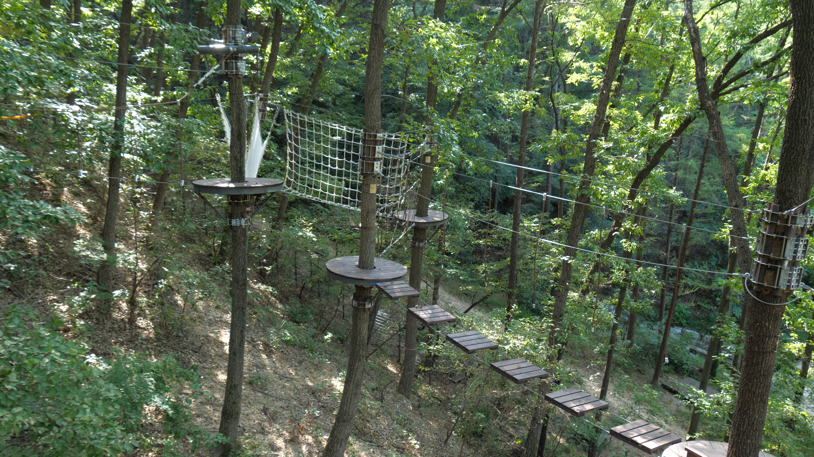
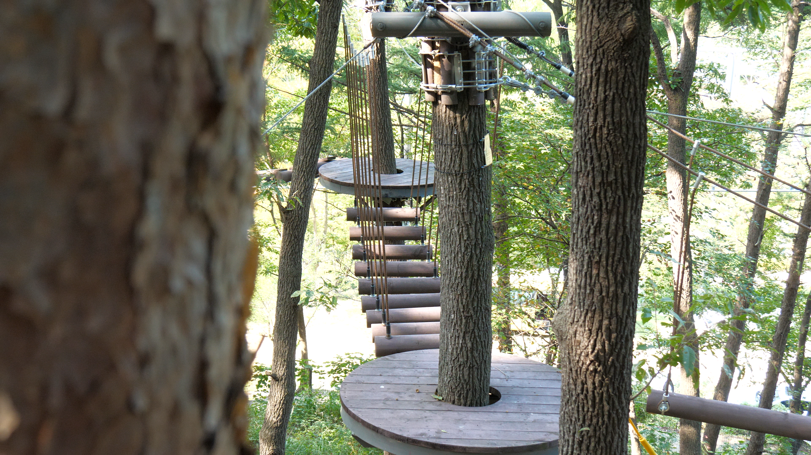
🌲 숲모험
청소년·성인
숲속 나무와 다양한 체험시설을 연결하여 자연 속에서 직접 이동하고 체험할 수 있는 어드벤처형 산림체험시설입니다.
📏 신장 : 150~190cm
⚖️ 체중 : 45~90kg
⭐ 권장 신장 : 160cm 이상
💰 이용요금 : 7,000원
⚠ 신장·체중 조건을 모두 충족해야 체험이 가능합니다.
⚠ 조건을 충족하더라도 장비가 올바르게 착용되지 않을 경우 체험이 제한될 수 있습니다.
⏰ 회차마감 40분 전까지 발권 가능

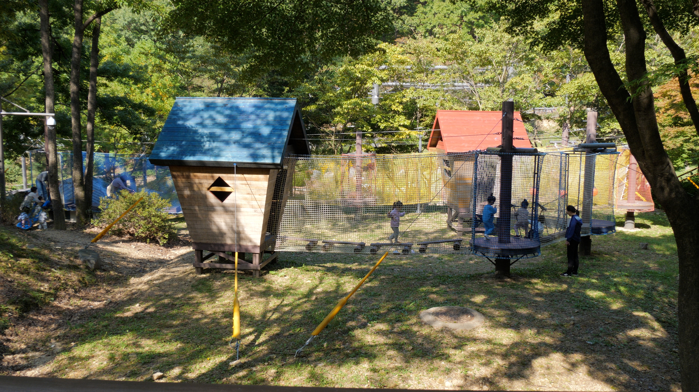
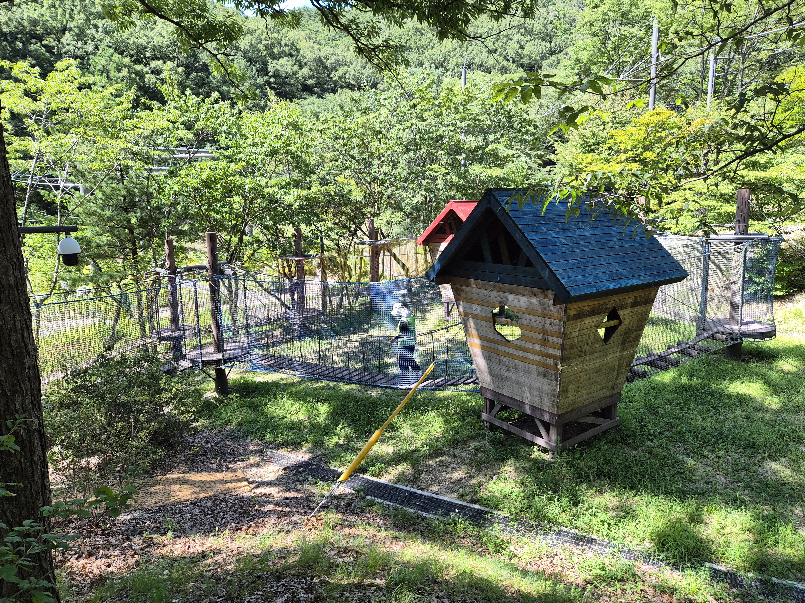
🧒 어린이 숲모험
어린이가 숲속에서 다양한 시설을 안전하게 체험할 수 있도록 구성된 어린이 체험공간입니다.
🎒 이용대상 : 초등학교 1학년 이상 ~ 6학년 이하
💰 이용요금 : 무료개방
※ 어린이 숲모험은 무료 개방시설입니다.
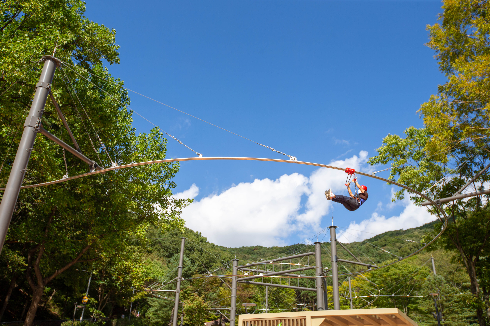
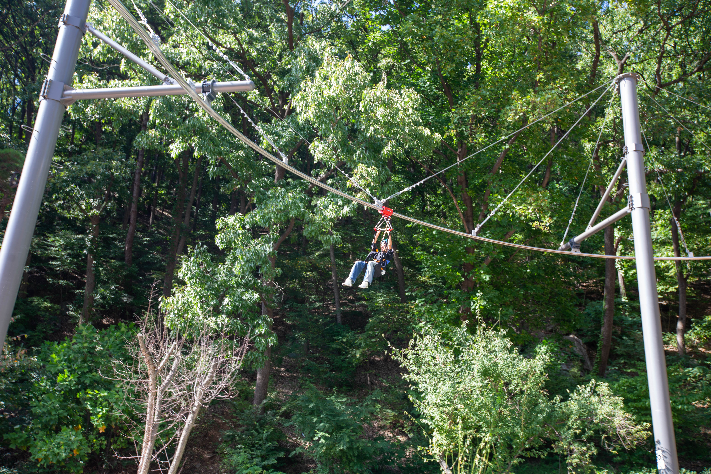
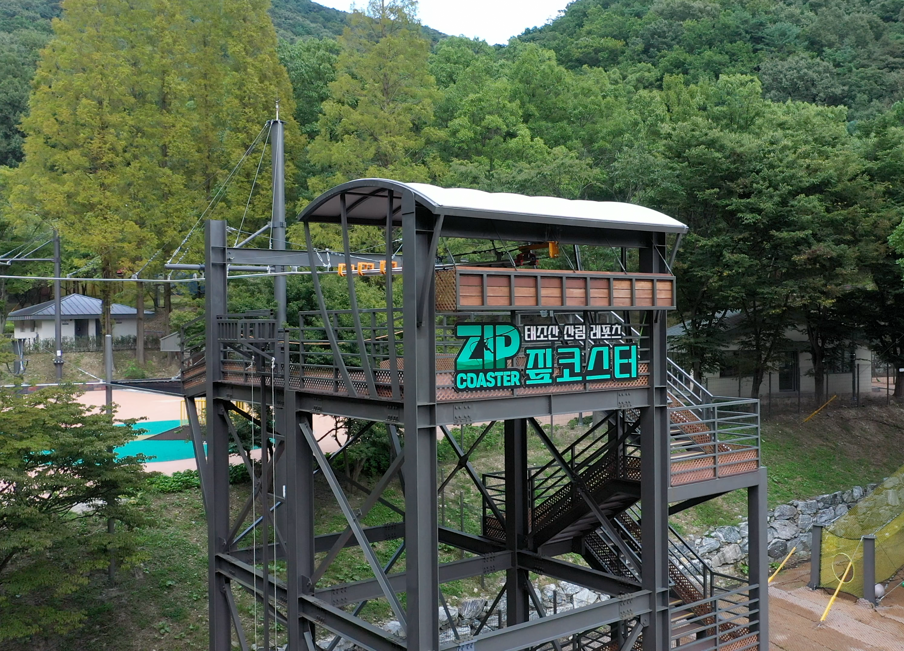
🪂 곡선형활강(짚코스터)
숲속을 가로지르며 태조산의 자연을 색다른 방법으로 즐길 수 있는 체험시설입니다.
📏 신장 : 150~190cm
⚖️ 체중 : 45~90kg
💰 이용요금 : 7,000원
⚠ 50kg 미만은 중량조끼 착용 (현장 제공)
⚠ 만 70세 이상 고위험 이용자는 입장이 제한됩니다.
⏰ 회차마감 10분 전

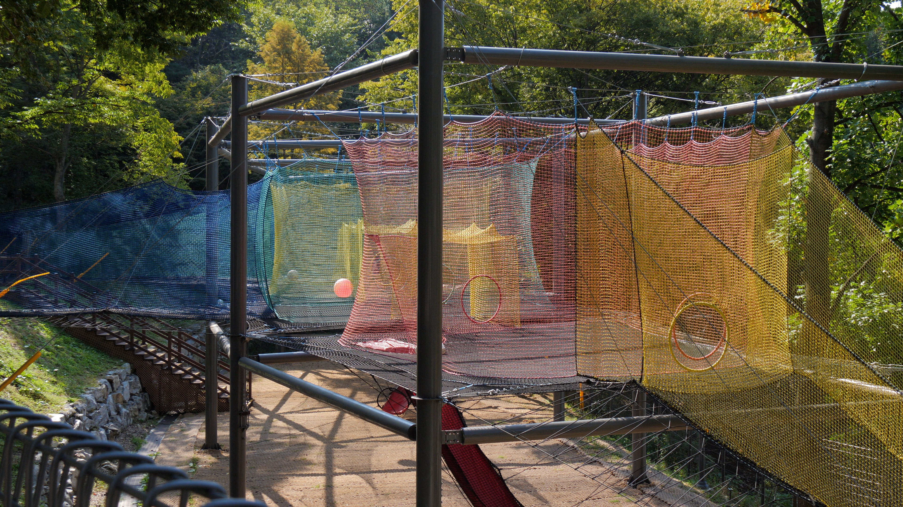
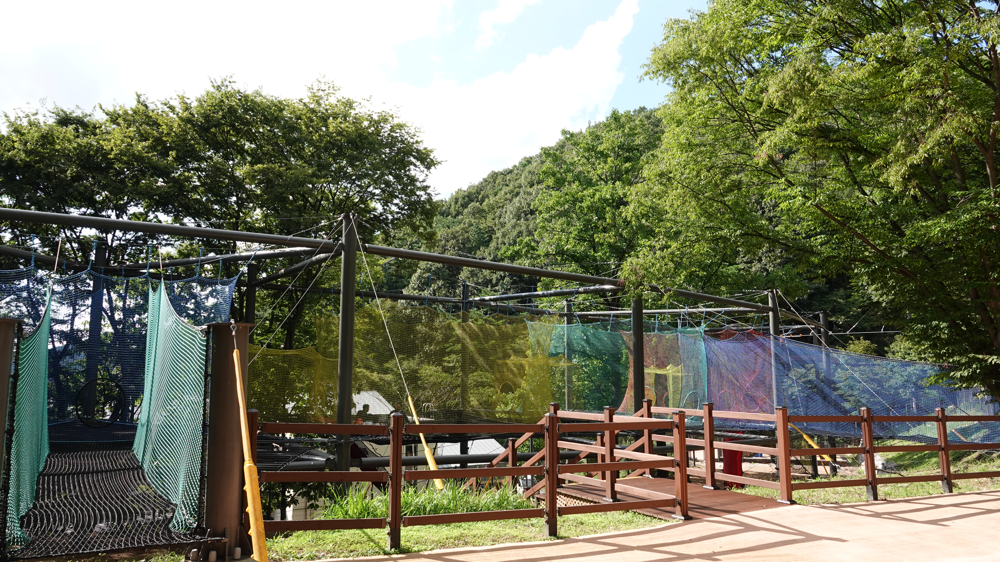
🕸 공중네트
숲속에서 다양한 네트형 시설을 이용하며 가족과 함께 즐길 수 있는 체험공간입니다.
📏 신장 : 120cm 이상
⚖️ 체중 : 90kg 이하
👶 어린이 : 만 5세~11세
💰 청소년·성인 : 5,000원
💰 어린이 : 3,000원
※ 신장 120cm 미만은 보호자 동반 시 가능합니다.

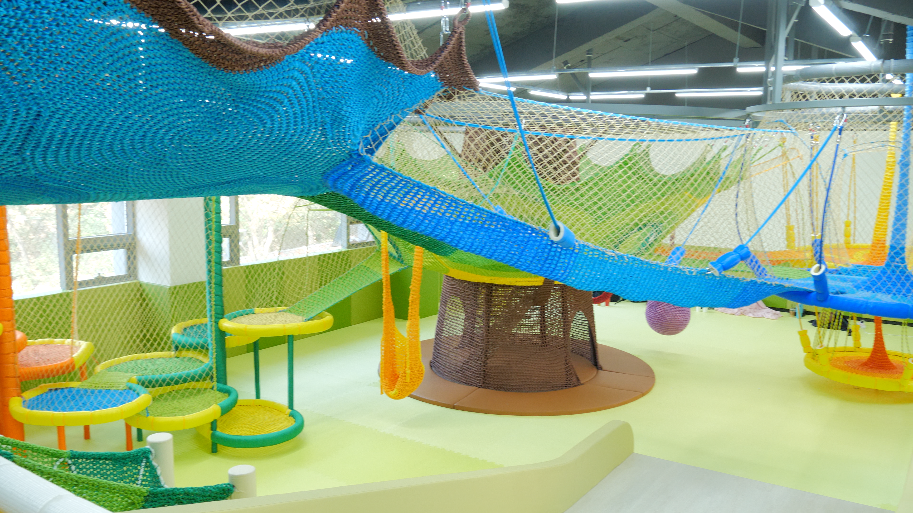
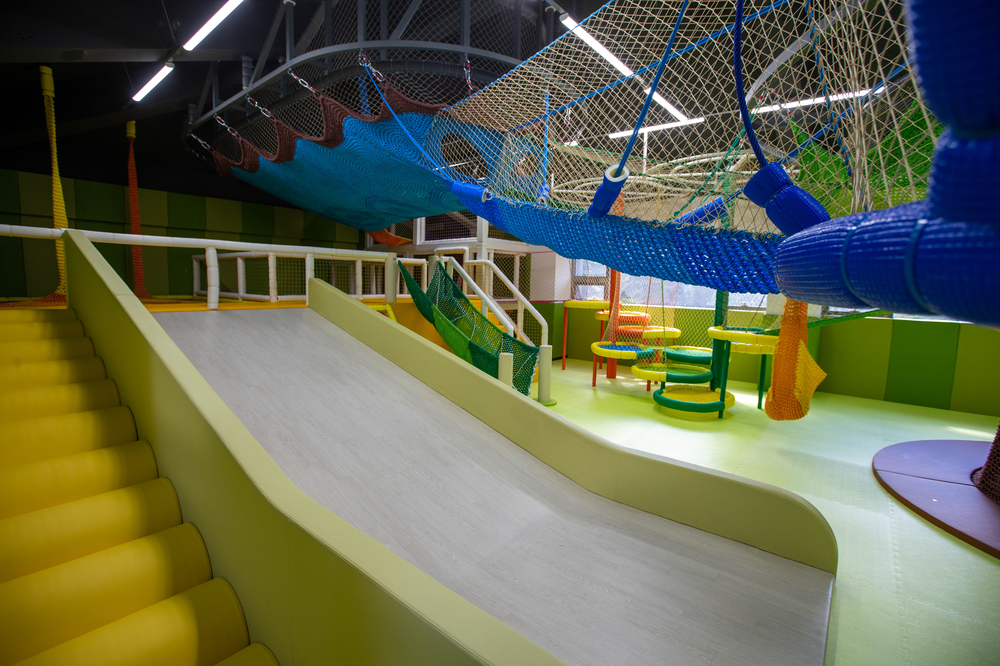
🛝 키즈놀이터
어린이들이 자유롭게 뛰어놀 수 있는 실내 놀이공간입니다.
👶 이용대상 : 36개월~만 5세
💰 이용요금 : 무료
🧦 양말 착용 필수
👨👩👧 보호자 동반 필수
⚠ 안전한 이용을 위해 이용수칙을 준수해주세요.
🧦 양말 착용은 필수입니다.
👨👩👧 보호자 동반은 필수입니다.
🎫 통합권
짚코스터·공중네트·숲모험을 하나의 이용권으로 이용할 수 있습니다.
💰 이용요금 : 12,000원
📏 신장 : 150~190cm
⭐ 권장 신장 : 160cm 이상
🎟 이용 당일 각 시설 1회 이용
⭐ 숲모험 우선체험
⚠ 부분양도 및 환불 불가
⚠ 통합권은 현장발권만 가능합니다.
⏰ 운영시간
※ 짚코스터 : 회차마감 10분 전
※ 숲모험(청소년·성인) : 회차마감 40분 전까지 발권 가능
※ 통합권·키즈놀이터 : 현장발권만 가능
💳 감면 및 이용안내
감면 대상에 해당하는 경우 증빙서류 확인 후 이용요금 감면이 적용됩니다.
30% 감면
- 천안시민
- 다자녀가정 (18세 미만 자녀 2명 이상)
- 장애인 (보호자 1명)
- 기초생활수급자
- 다문화가족
- 국가보훈대상자
40% 감면
천안시민이면서 30% 감면 대상에 해당하는 경우
🎫 면제
- 법인·단체가 공익 목적으로 이용하는 경우
- 천안시에서 주최하거나 주관하는 행사의 경우
- 그 밖에 시장이 이용료를 면제해야 할 특별한 사유가 있다고 인정하는 경우
📄 감면 이용 시 필요한 서류
- 천안시민 : 주민등록증, 운전면허증, 여권 등
- 다자녀가정 : 가족관계증명서
- 장애인 : 장애인등록증 또는 장애인증명서
- 기초생활수급자 : 복지 대상자 증명서
- 다문화가족 : 가족관계증명서 등
- 국가보훈대상자 : 국가보훈등록증, 국가유공자 유족증 등
⚠ 중복감면 안내
천안시민 감면과 다른 감면 대상에 중복 해당하는 경우 중복감면 기준에 따라 적용됩니다.
⚠ 이용 유의사항
- 당일 현장 기상 상황에 따라 관리자 판단으로 이용이 취소될 수 있습니다.
- 10인 이상 단체 이용 시 매표소로 문의해주세요.
- 시설 이용 전 개인물품은 카페 내 물품보관소에 보관해주세요.
-
매주 화요일은 휴장일입니다.
※ 화요일이 공휴일인 경우 휴장일이 달라질 수 있습니다.